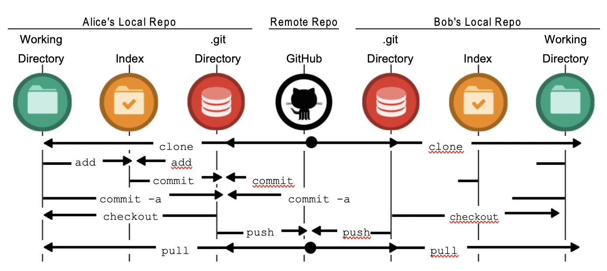

What is Git?
Git is a mature, actively maintained open source project originally developed in 2005 by Linus Torvalds, the famous creator of the Linux operating system kernel . A staggering number of software projects rely on Git for version control, including commercial projects as well as open source.

What is GitHub famous for?
GitHub is an increasingly popular programming resource used for code sharing . It's a social networking site for programmers that many companies and organizations use to facilitate project management and collaboration.